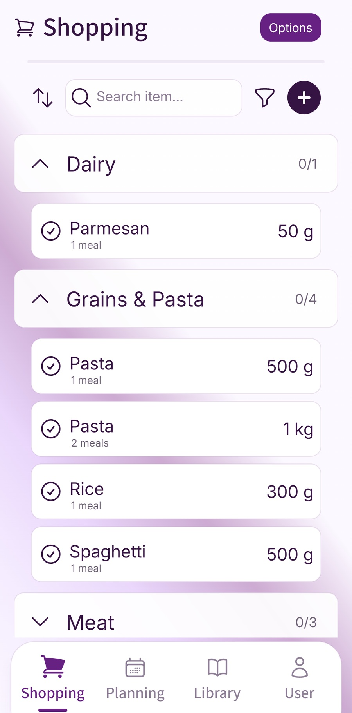

You've reached the frozen food, checked the list and spotted the shampoo you walked past ten minutes ago. Then the apples turn out to be halfway down the page, between rice and washing-up liquid. Everything was on the list; it was just difficult to follow in the shop.
Organising a shopping list by supermarket aisle puts nearby items together and arranges those groups around the route you take. You can use broad sections such as fruit and veg, bakery, cupboard food, household, chilled and frozen. A familiar order makes it easier to see what you need while you're in the right part of the store.
Start with the supermarket you use most often. You can improve the arrangement as you shop, without needing an exact map or an aisle number for every item.
Finish the list before arranging the route
Choose the meals, check what you already have and add the household extras. Include quantities and useful details while you're thinking about them: two tins of chopped tomatoes, the shampoo someone asked for, or the size of milk your household usually buys.
Then organise that completed list for the supermarket. Keeping dinner ingredients together is useful while planning, but once you're shopping it helps to see all the items you need from the same section at once.
If you're still deciding what belongs on the list, our meal-plan-to-shopping-list guide covers combining ingredients and checking supplies. This guide takes that list through the shop.
Choose sections you recognise in the shop
Use names that mean something when you're pushing a trolley. Fruit and veg, bakery, tins and jars, household, chilled and frozen are a useful starting point. Add a section when it makes the list easier to scan.
A household with a long cleaning and toiletries list might separate those two groups. A smaller shop might manage with one household section. If rice, pasta and tins are spread across several aisles, you can split cupboard food into more specific groups later.
A numbered aisle can be useful in a store you know well, but a label such as “pasta and rice” is easier to recognise if the shop moves things around. Put the details you need beside each item so the group name doesn't have to carry everything.
Arrange sections around your usual route
Think about the supermarket you actually use: where you enter, which sections sit together and where you normally finish. Put the list's groups into an order that follows that trip. You can make a small note during the next shop when you find a section in an unexpected place.
Build food safety into the route. The Food Standards Agency's shopping advice in its heatwave guide recommends choosing chilled and frozen food last and using cool bags with ice or frozen gel packs where possible. Take food home promptly and put fridge and freezer items away first. Those practical steps are especially useful in warm weather.
That might mean leaving a chilled section near the entrance until the end. The useful route is one that fits the shop and keeps cold food cold, even if it involves a short return to that area.
See a mixed list organised for the shop
Here is an example with the same ten items before and after sorting. The quantities are illustrative; choose the amounts your household needs.
Before: a mixed shopping list
Milk, 2 pints; rice, 1 kg; apples, 6; shampoo, 1 bottle; frozen peas, 500 g; bread, 1 loaf; carrots, 1 bag; cheddar, 250 g; chopped tomatoes, 2 tins; washing-up liquid, 1 bottle.
After: one possible route through the shop
- Fruit and veg: 6 apples; 1 bag of carrots.
- Bakery: 1 loaf of bread.
- Cupboard food: 1 kg rice; 2 tins of chopped tomatoes.
- Household: 1 bottle of shampoo; 1 bottle of washing-up liquid.
- Chilled: 2 pints of milk; 250 g cheddar.
- Frozen: 500 g peas.
Your supermarket may need a different order. Keep the same items and quantities, then change the group order to suit its layout. As you reach each section, you have a short group of items to check instead of searching the whole list again.
Give awkward items a consistent home
Some items could reasonably fit more than one group. Plant-based drinks, wraps, herbs and sauces might be stocked differently in different stores. Put the version you buy where you normally find it, and adjust the group if that changes.
A single home for each item keeps the list clear. If you aren't sure where something is, leave a short “find before checkout” note or ask in the shop. Once you've found it, put it into the right group for next time.
Keep an eye on ungrouped additions too. A last-minute item should stay visible until you've given it a place, so it doesn't disappear from the route you're following.
Adapt the order for another supermarket
If you regularly use two supermarkets, keep a simple arrangement for each. The items can be familiar even when the route is different. Name the arrangement clearly enough that the person shopping knows which store it is for.
For an occasional visit somewhere new, broad sections are usually a useful starting point. Follow the signs, ask about anything you can't find and change the order afterwards if you'll be returning. You can keep the useful groups and improve just the parts that caused extra searching.
If someone else is doing the shop, use labels they recognise and keep quantities or preferred products clear. When two people split the shopping, agree which sections each person is covering and mark items as collected so both can see what remains.
Using aisle sorting in Fameally
Fameally connects saved meals, weekly plans and ingredient-based shopping lists. Its Individual plan includes sorting lists by your store's aisles, and Family includes those features with a shared household workspace.

Keep the quantities and product details you need while organising the list for your usual shop. Use an arrangement that matches where you actually find things, and review it when the layout changes. The screenshot shows an existing grouped shopping-list view; it isn't a supermarket floor plan.
If you're choosing a tool for the household, our shopping-list app comparison explains the different routines to consider. Check current access details before choosing a plan.
Make the next shop easier
After shopping, look at the parts of the list that sent you searching. Was an item in the wrong group? Did two sections need swapping? Was the quantity unclear? Make those small changes while the trip is still easy to remember.
Keep the arrangement that worked. The next list will contain different items, but a familiar set of sections can give them a useful order. Before checkout, scan anything still outstanding, including additions made during the trip.
A quick check before your next shop
- Complete: meals, quantities and household extras are on the list.
- Group: each item has a useful supermarket section.
- Order: the sections follow the store you're visiting.
- Keep cold: chilled and frozen food fit near the end.
- Review: check outstanding items and adjust awkward groups for next time.
A few common questions
- Do I need exact supermarket aisle numbers?
- No. Broad section names can be enough to make a list easier to follow. Add numbers or more specific groups when they help in the store you use.
- Should I organise the list by recipe or aisle?
- Use recipes to work out what you need, then group the finished shopping list for the shop. Our meal-plan-to-list guide covers the first part of that process.
- What if I shop in more than one supermarket?
- Keep a recognisable arrangement for each regular store, or start with broad sections for an occasional visit. Change the route to fit the shop while keeping item details and quantities intact.
- What should I do with items added while I'm shopping?
- Check new additions before leaving the relevant section where possible, and scan outstanding items before checkout. If people are sharing the list, agree how to flag a request once the shopper has finished.
Sources checked
Food-safety guidance and Fameally's published plan information were checked on 22 October 2026. The example route is illustrative and can be adapted to your supermarket.
- Food Standards Agency: keeping food cool when shopping.
- Fameally's meal and shopping workflow and current plans and aisle-sorting access.
Keep planning
Get your next shopping list ready.
Plan familiar meals, build the ingredient list and organise it for your usual shop.